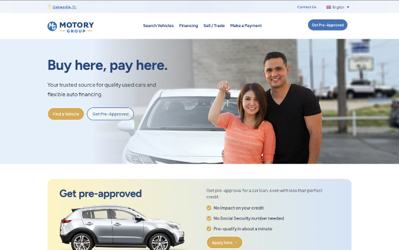
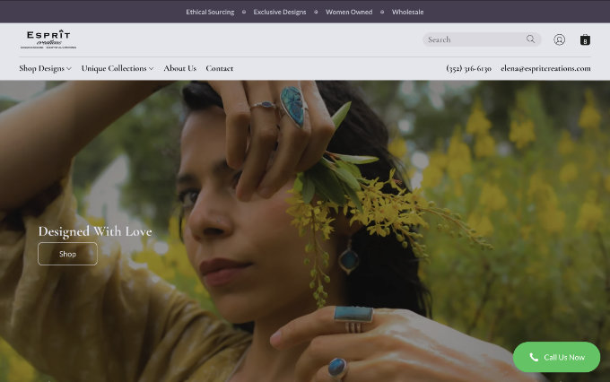

Clarify the system. Reduce drag. Make scaling easier.
Streamline codebases, shape technical direction, and create the architectural foundations that let teams move faster with less chaos.
We engineer custom software, scalable architectures, and AI-powered tools that help startups and growing businesses ship faster, scale reliably, and grow with confidence.
Led by engineers with nearly three decades of experience, Keryx Solutions partners with startups and growing businesses on hands-on software architecture, product engineering, technical leadership, and practical AI integration.
Streamline codebases, shape technical direction, and create the architectural foundations that let teams move faster with less chaos.
Design delivery workflows, internal tooling, and product capabilities that make AI useful in practice.
Pair strong frontend implementation with pragmatic full-stack delivery and a user-centered point of view.
Establish delivery habits, mentor teams, and create standards that keep growing products maintainable.
Trusted by Stanford, MemorialCare, SharpSpring, Sony Music, and others to ship systems that perform.
Representative work spans healthcare, higher education, enterprise knowledge systems, analytics dashboards, and marketing technology.

Motory Group
Custom development, UX & design, Ongoing support, SEO
WordPress, PHP

Esprit Creations
Custom development, Migration, Integration, Ongoing support
Lightspeed POS & eCommerce, JavaScript, Python
Florida Wholesale Liquidation
Custom development, E-commerce
WordPress, PHP
The consulting approach is intentionally pragmatic: align on business goals, reduce avoidable complexity, and build systems that support both human teams and AI-assisted workflows.
Built to fit your exact requirements — no unnecessary frameworks, no wasted effort.
Interfaces designed around real user behavior, tested for clarity, and built for speed.
TypeScript, React, and Node.js delivered with consistent standards and clean architecture.
System architecture that grows with your business, from MVP to enterprise workloads.
LLM-powered features, automated workflows, and AI tooling that creates real leverage — not noise.
Drawing on nearly three decades of software engineering experience, Bala brings deep expertise in AI and modern development practices to his role as principal engineer. His strategic mindset and technical skills enable him to identify opportunities for meaningful transformation in complex technical environments.
Throughout his career, Bala has demonstrated architectural excellence and team leadership in mission-critical environments. His deep understanding of systems architecture and AI integration reflects years of hands-on experience across evolving technological landscapes.
Certified in UX design by the Nielsen Norman Group, Bala brings a rare combination of technical depth and user empathy to his work. His appreciation for intuitive design stems from a belief that technology should enhance human capability rather than create new barriers.
As a technology enthusiast with a passion for innovation, Bala regularly contributes practical insights on AI, architecture, and delivery. His pragmatic approach to problem-solving comes from hands-on experience across diverse industries and technical environments.
With two decades of experience managing technical operations in high-stakes environments, Krishna brings a unique operational perspective to AI solutions and software engineering. His background in mission-critical live production — where systems had to perform flawlessly under pressure — shaped his approach to building tools that are reliable where it matters most.
At Keryx Solutions, Krishna focuses on client discovery, rapid prototyping, and translating business requirements into practical AI-powered solutions. He works closely with clients to identify where automation, intelligent workflows, and system integration can eliminate bottlenecks and create measurable leverage.
Having spent years as the end user dealing with clunky systems and manual workarounds, Krishna designs software from the operator's point of view. His experience across audio engineering, real-time systems, and full-stack development gives him a grounded understanding of how technology is actually used in the field.
Krishna holds a Diploma of Audio Engineering from SAE Institute and a Full Stack Web Development certification from freeCodeCamp. He continues to expand his expertise in AI integration, system architecture, and technical problem-solving across diverse industries.
Keryx Solutions is best suited for startups and growing businesses that need senior technical guidance, hands-on product engineering, or help turning AI experiments into maintainable delivery systems.
Typical work includes architecture modernization, frontend and full-stack delivery, AI-assisted workflow design, UX-minded product engineering, and codebase streamlining for teams preparing to scale.
AI is used where it improves leverage and delivery quality, including developer tooling, review workflows, product features, and internal systems. The goal is practical integration rather than AI for its own sake.
Start with a conversation about the current product, technical constraints, and desired outcomes. From there, Keryx Solutions can recommend a focused engagement around architecture, delivery, AI integration, or technical leadership.
Tell us about your project, your constraints, and what success looks like. We'll respond within one business day with a focused recommendation — whether you need architecture guidance, product engineering, or AI integration.
Get in touch